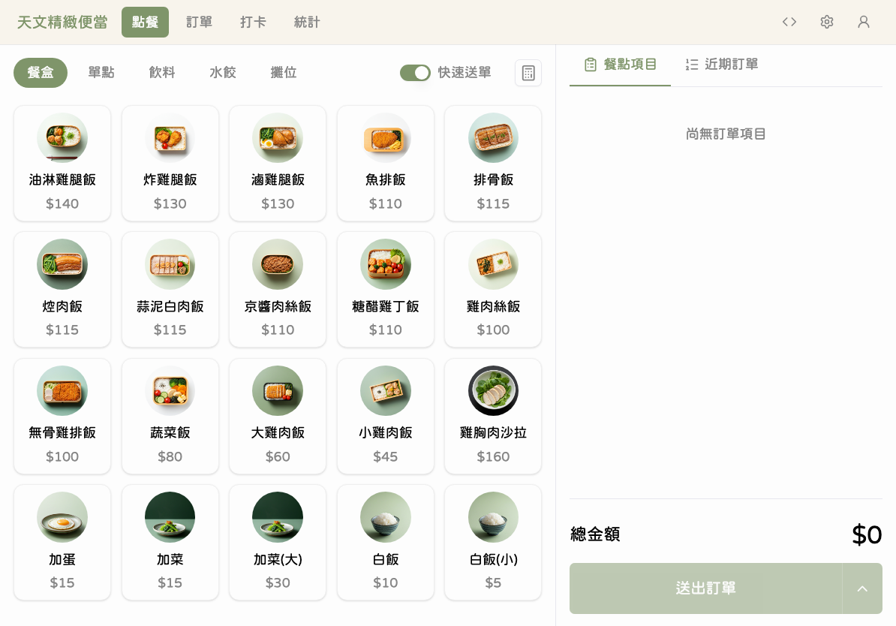
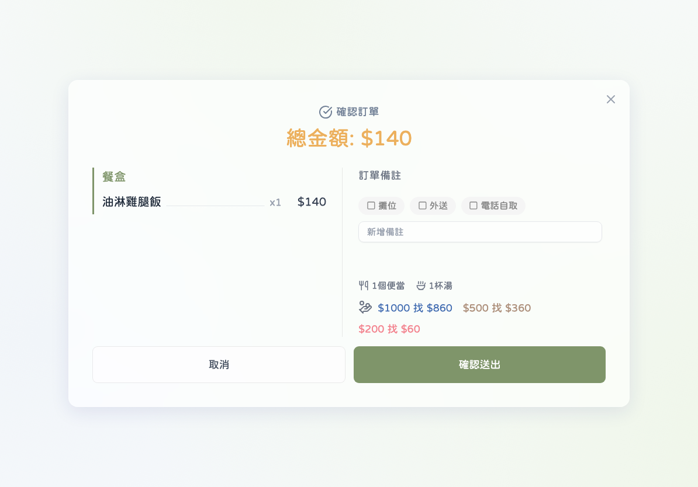
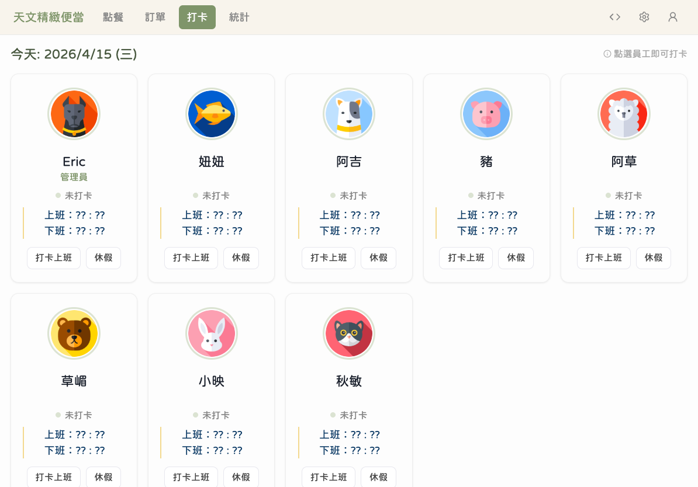
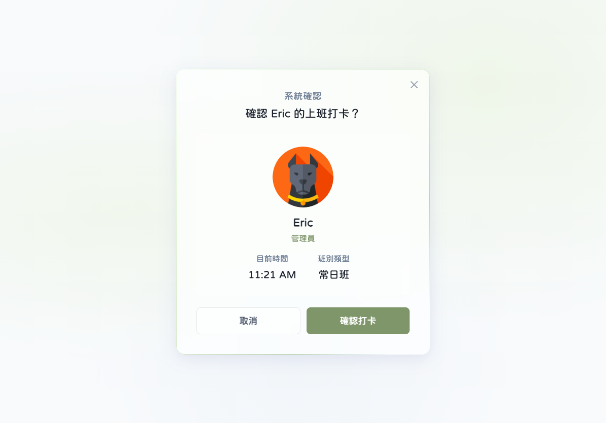
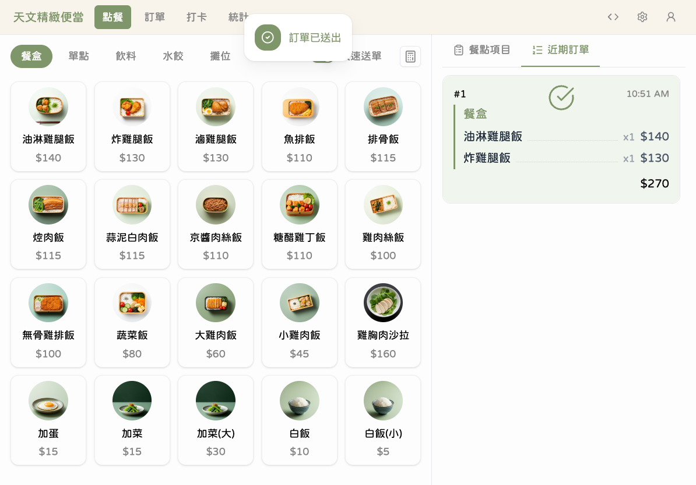
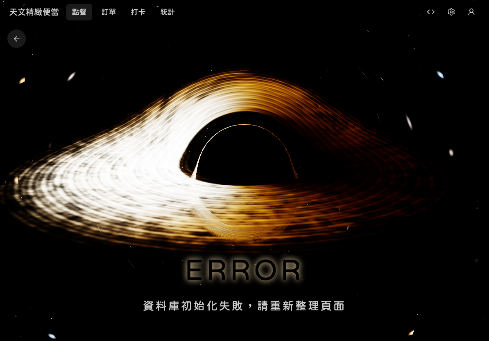

天文 V2 POS 快速參考指南
1
下單
- 點擊左側商品卡片 → 品項加入右側訂單面板
- 確認品項和數量後，點擊底部「送出訂單」
- 快速模式直接送出；標準模式需再點「確認」


2
打卡上班
- 切換到「打卡」分頁 → 找到自己的員工卡片
- 點擊卡片 → 確認視窗點「打卡上班」或「打卡下班」


3
編輯訂單
- 在右側面板切換到「近期訂單」
- 找到目標訂單，向左滑動 → 點擊「編輯」進行修改

4
看營收
- 點擊導覽列「統計」分頁
- 查看 KPI 指標（總營收、日平均、上午/下午營收）
- 使用日期選擇器切換範圍：今天 / 本週 / 本月

5
手動備份
- 進入「設定」→「雲端備份」
- 點擊「立即備份」按鈕 → 等待 10-30 秒
- 看到成功訊息即完成（需管理員登入）

!
遇到問題
- 看到錯誤畫面 → 點擊「重新載入」或「回首頁」
- 按鈕無反應 → 關閉應用程式後重新開啟
- 問題持續 → 記錄錯誤訊息並通知管理員

您的資料不會遺失，大多數問題重新開啟即可解決